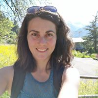

Carol
I grew up near Paris and never thought of living in the mountains. I enjoyed a busy and intense city life ! In 2009 we moved here and I quickly realised how beautiful the mountains are in every season and how much better the living style in a quiet area close to nature. I changed my habits, stopped being busy all the time and started to enjoy the life, my family, our friends and this amazing region nestled between lakes and mountains! Of course I will teach you French to improve your ability, but I also want to share our lifestyle with you, the sport, nature, tasty meals, family &friends!
After a Master degree in International business and 10 years of experience in the tourism industry, I changed my work and started a French teaching course, gaining a diploma from the Alliance Française. I love teaching my mother tongue and tailoring my lessons to individual student.
